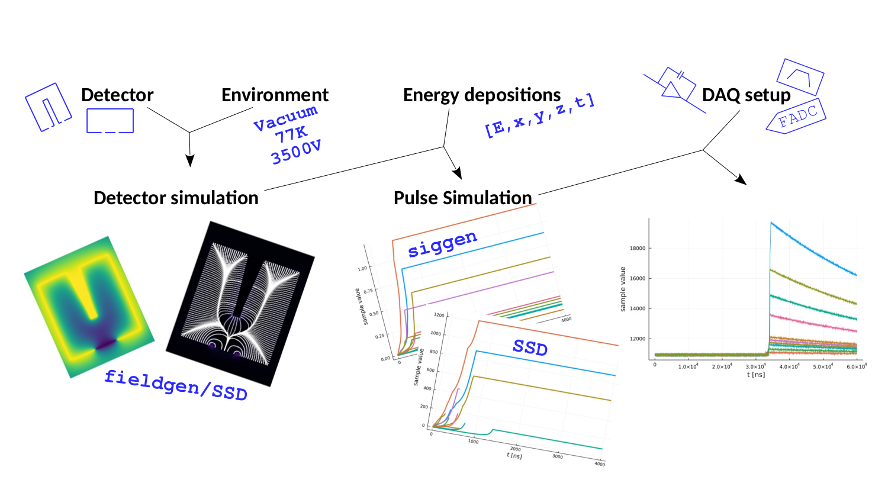
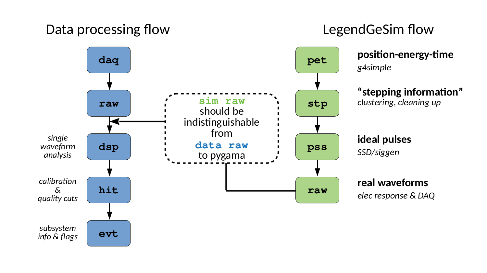

The LEGEND Germanium Simulation Chain
LegendGeSim is a multi-purpose tool that can be used for anything from visualizing detector geometry to simulating raw files with realistic data-like waveforms that mimic data and are compatible with data processing tools.
The path towards a data-like raw hdf5 file starts from simulating the detector itself for given geometry and environmental conditions; then simulating pulses based on given information on energy depositions; and finally, simulating the effects of the DAQ chain.

The chain can be used for any step in this path independently: visualize detector geometry, simulate fields, simulate ideal pulses, or finally, simulate realistic data-like waveforms. Each step is described in a corresponding Manual and Tutorial section.
The tiers of the simulation are pet->stp->pss->raw where
pettier: input information onposition,energy amdtime of the depositionsstptier: stepping information, currently clustering, removing events reconstructed outside of the detector and with zero energy. In the future things like pile-up may go herepsstier: ideal pulses simulated bySolidStateDetectorsorsiggenrawtier: simulated realistic waveforms in hdf5 format that mimics datarawtier
